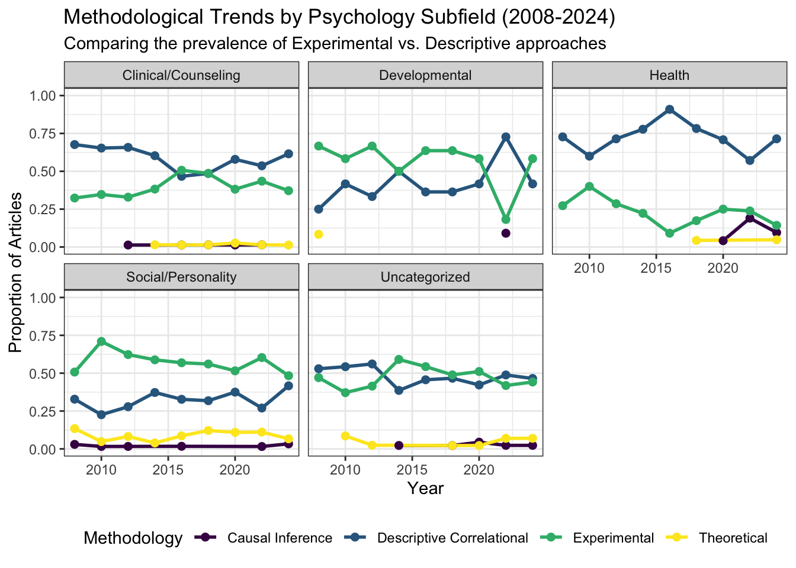

This piece zooms into the methodological trends of subfields in psychology using data from Lam (2025). I categorized articles from journals into subfields, then looked closer at social and personality psychology subfields.
First, we load the necessary libraries and pull the dataset directly from OSF.
Then, specific journals were placed into broader subfields (Clinical/Counseling, Social/Personality, Health, Developmental, etc.).
psych_data <- psych_data %>%
mutate(Subfield = case_when(
Journal %in% c("Journal of Anxiety Disorders",
"Journal of Consulting and Clinical Psychology",
"Journal of Clinical Child and Adolescent Psychology",
"Journal of Counseling Psychology",
"Behaviour Research and Therapy",
"Behavior Therapy",
"Journal of Traumatic Stress") ~ "Clinical/Counseling",
Journal %in% c("Personality and Social Psychology Review",
"Journal of Personality and Social Psychology",
"Journal of Personality",
"Personality and Social Psychology Bulletin",
"British Journal of Social Psychology",
"Journal of Experimental Social Psychology") ~ "Social/Personality",
Journal %in% c("Journal of Occupational Health Psychology",
"Health Psychology") ~ "Health",
Journal %in% c("Developmental Science") ~ "Developmental",
Journal %in% c("Emotion",
"Psychology of Women Quarterly",
"Journal of Positive Psychology",
"British Journal of Psychology") ~ "Uncategorized",
TRUE ~ "Other"
))
# Display the distribution of articles per subfield
print(table(psych_data$Subfield))##
## Clinical/Counseling Developmental Health Social/Personality
## 738 108 206 611
## Uncategorized
## 401There are 2064 total articles.
Then, we aggregate the proportion of methodological approaches within each subfield by year.
# Reshape and summarize data
subfield_yearly_summary <- psych_data %>%
pivot_longer(cols = all_of(methodologies), names_to = "category", values_to = "value") %>%
filter(value == 1) %>%
group_by(Subfield, year, category) %>%
summarize(total_rows = n(), .groups = "drop") %>%
group_by(Subfield, year) %>%
mutate(proportion = total_rows / sum(total_rows)) %>%
mutate(category = gsub("_", " ", category))
# Visualization
plot_subfields <- ggplot(subfield_yearly_summary,
aes(x = year, y = proportion, color = category, group = category)) +
geom_line(linewidth = 1) +
geom_point(size = 2) +
facet_wrap(~Subfield) +
labs(title = "Methodological Trends by Psychology Subfield (2008-2024)",
subtitle = "Comparing the prevalence of Experimental vs. Descriptive approaches",
x = "Year", y = "Proportion of Articles", color = "Methodology") +
theme_bw() +
scale_color_viridis_d(option = "D") +
theme(legend.position = "bottom") +
ylim(0, 1)
plot_subfields
There doesn’t seem to be any linear trends, though perhaps there’s been a slight decrease in experimental papers in health psychology.